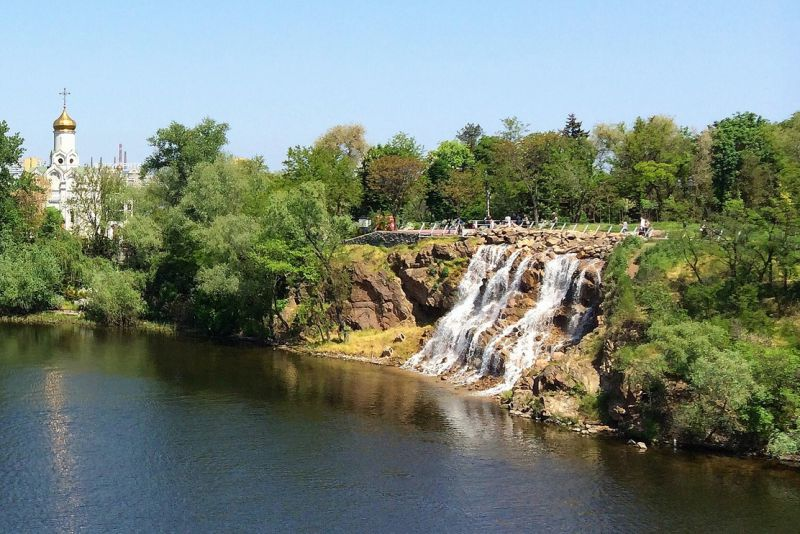
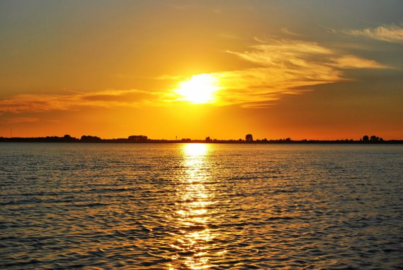
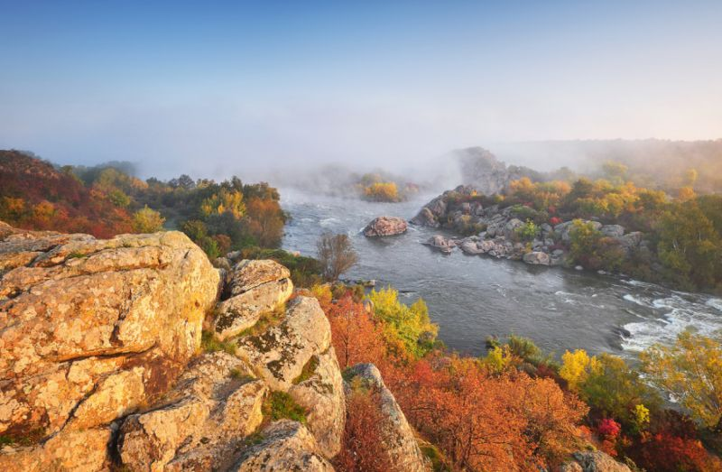

Монастирський острів (Дніпро) - відвідини Монастирського острову – можливість поєднати задоволення від природної краси, цікавий історичний екскурс та доторкнутися до сакрального.

Шацький національний парк - природний парк, який поєднує красу знаних Шацьких озер, затишок заповідних зон і різноманітність Полісся. А найцікавіші тутешні готелі розміщені у селищі Світязь.

«Бузький Гард» (Мигія / Первомайськ) - національний природний парк – фантастичне місце і унікальна природна пам’ятка Півдня. Тут чекають каньйони, археологічні знахідки, радонові озера і рафтинг на Мігейських порогах.